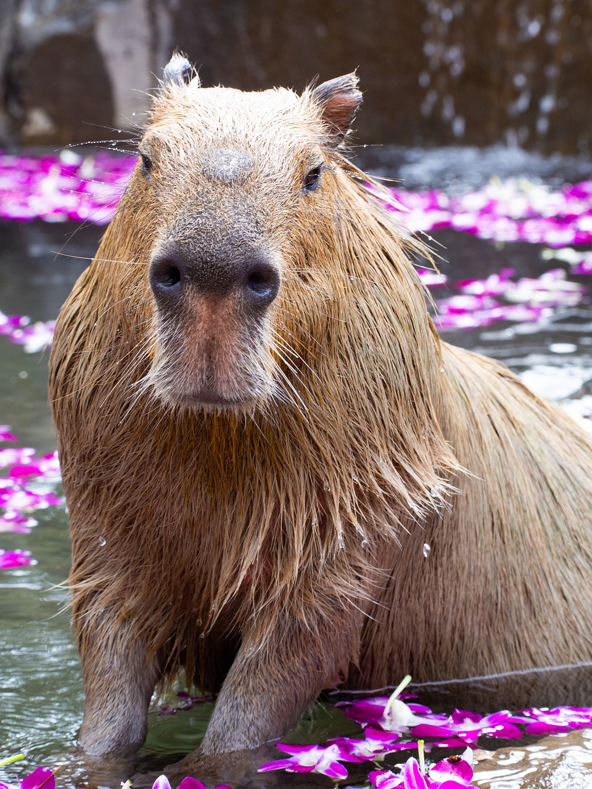
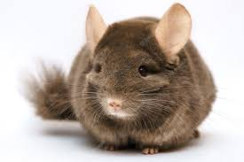
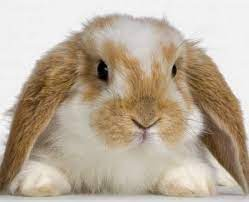

são animais calmos e mansos eles são mamiferos herbiveros que se destacam por levarem o titulo de maior roedor do mundo.
 elas são muito tranquilas e comportadas. Além disso, gostam de interação e precisam de bastante atividade física.
 Esses roedores geralmente são onívoros, com olfato bem aguçado e gestação rápida, dando origem a vários descendentes que em pouco tempo já se mostram independentes.
Esses roedores geralmente são onívoros, com olfato bem aguçado e gestação rápida, dando origem a vários descendentes que em pouco tempo já se mostram independentes.
Os coelhos são mamíferospossuem como características corpo arredondado, cabeça grande com largas orelhas, audição e olfato bem desenvolvidos e amplo campo de visão.
 O hamster é um animal naturalmente limpo e fácil de se cuidar. Ele come pouco e é fácil de encontrar nos pets shops. O mais importante de tudo: é um pet divertido e uma excelente companhia.
O hamster é um animal naturalmente limpo e fácil de se cuidar. Ele come pouco e é fácil de encontrar nos pets shops. O mais importante de tudo: é um pet divertido e uma excelente companhia.
 O porquinho-da-índia é um roedor sem cauda, que pesa entre 700 e 1.100 gramas. Ele tem o corpo arredondado e compacto, que pode chegar até 26 cm de comprimento. Suas orelhas são arredondadas e pequenas, com formato de pétala.
O porquinho-da-índia é um roedor sem cauda, que pesa entre 700 e 1.100 gramas. Ele tem o corpo arredondado e compacto, que pode chegar até 26 cm de comprimento. Suas orelhas são arredondadas e pequenas, com formato de pétala.